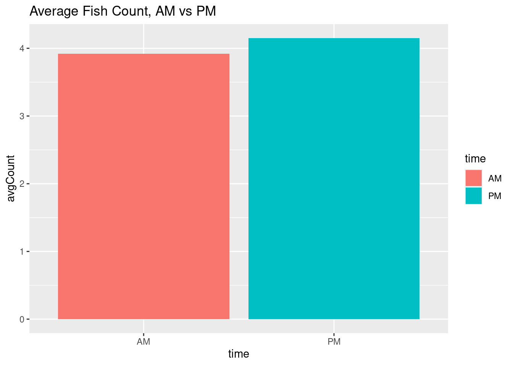

library(tidyverse)Module 3: Inference
Statistical inference and two sample t-tests
Student learning outcomes
- Students will understand basic concepts underlying inference
- Students will be able to formulate statistical hypotheses using data
- Students will be able to perform and interpret the results of two sample t-tests
Some review on t-tests and statistical hypotheses
A two sample t-test is a way of evaluating if the means of two populations are different, given our samples of those populations.
A t-test relies on the calculate a t-score. This quantity depends on our sample mean, our sample standard deviation, and the size of our sample.
The formula of the t-score for a two sample t-test:
\[t = \frac{\bar{x}_1 - \bar{x}_2}{\sqrt{\frac{s_1^2}{n_1}+\frac{s_2^2}{n_{2}}}}\]
The primary output of a t-test is a p-value. A p value represents the probability that the difference between our sample means would have occurred by chance.
We can use this p-value to assess a statistical hypothesis.
Statistical hypotheses are formulated as a null and an alternative hypotheses:
\(H_{0}\) (null hypothesis) - There is no difference in the means of the populations we sampled from
\(H_{a}\) (alternative hypothesis) - The means of the populations we sampled from are different
Again, our p-value is the decimal probability that our data occurred by chance. For instance, a p-value of 0.05 would mean there is a 5% probability that the null hypothesis is true, given our observations.
Since we’ll be using ggplot to visualize our data, let’s load the tidyverse:
Sick fish example
Recall that there seemed to be a difference in the proportion of sick fish in a tank, when the tank was above or below a critical temperature value.
At the time, we just compared means and visualized the data, but that isn’t very statistically rigorous.
#load the data, add the perc_sick column:
sick_data <- read_csv("sick-fish.csv")
glimpse(sick_data)
sick_data <- sick_data %>%
mutate(perc_sick = num_sick/num_fish)Generate descriptive statistics, comparing the average percent of sick tilapia for those above and below the critical temperature:
sick_data %>%
filter(species=="tilapia") %>%
group_by(below) %>%
summarize(mean = mean(perc_sick))# A tibble: 2 × 2
below mean
<lgl> <dbl>
1 FALSE 0.125
2 TRUE 0.597Create a bar chart showing the average percent of sick tilapia above and below the critical temperature:
sick_data %>%
filter(species=="tilapia") %>%
ggplot(aes(x=perc_sick, fill=below)) +
geom_histogram()`stat_bin()` using `bins = 30`. Pick better value with `binwidth`.So, lets validate our results using a t-test.
tilapia <- sick_data %>%
filter(species=="tilapia")
t.test(perc_sick ~ below, data = tilapia)
Welch Two Sample t-test
data: perc_sick by below
t = -71.159, df = 721.94, p-value < 2.2e-16
alternative hypothesis: true difference in means between group FALSE and group TRUE is not equal to 0
95 percent confidence interval:
-0.4855783 -0.4595037
sample estimates:
mean in group FALSE mean in group TRUE
0.1249432 0.5974842 Fishing and leopard seals
As you are well aware by now, our main source of food (fish) has been compromised. Rather than starve or leave, we decide to source our fish from waters of Antarctica.
The problem is, the places we’d fish are also foraging grounds for leopard seals. To minimize the impact of our fishing on the seal population, we’d like to know where and when the presence of fish/seals are greater.
Luckily, we’ve been collecting relevant data for awhile. We have: radio tags on seals, and the number of seals at a given location. We also net traps to count humped rockcod, our shared food source.

Data exploration
Let’s take a look at our new data. Because we have two different collection schemes, our data are separated in to two data frames (and files).
seal_data <- read_csv("arctic-seals.csv")
fish_data <- read_csv("arctic-fish.csv")
glimpse(fish_data)Rows: 640
Columns: 5
$ date <date> 2021-03-01, 2021-03-01, 2021-03-01, 2021-03-01, 2021-03-01, …
$ net <dbl> 1, 2, 3, 4, 5, 1, 2, 3, 4, 5, 1, 2, 3, 4, 5, 1, 2, 3, 4, 5, 1…
$ time <chr> "AM", "AM", "AM", "AM", "AM", "PM", "PM", "PM", "PM", "PM", "…
$ num_fish <dbl> 7, 4, 2, 2, 5, 1, 0, 4, 6, 1, 6, 1, 3, 4, 4, 2, 4, 3, 4, 4, 4…
$ bay <chr> "Wilhelmenia", "Wilhelmenia", "Wilhelmenia", "Wilhelmenia", "…Group Brainstorm
We’d like to know if seal and fish counts are different during times of day observed.
Based on our goals, what quantities do we want to compare?
Create null and alternative hypotheses to evaluate our data
H0: no difference between the mean count of fish between the times of day
Ha: there is a difference
Visualization and descriptive statistics
Generate descriptive statistics from our data, and visualize the data.
#fish
fish_data %>% group_by(time) %>%
summarize(avgCount=mean(num_fish)) %>%
ggplot(mapping=aes(y=avgCount, x=time, fill=time)) +
geom_bar(stat="identity")+
labs(title="Average Fish Count, AM vs PM")
#seals
seal_data %>% group_by(time) %>%
summarize(avgCount=mean(num_seals)) %>%
ggplot(mapping=aes(y=avgCount, x=time, fill=time)) +
geom_bar(stat="identity")+
labs(title="Average Seal Count, AM vs PM")Performing our tests
Perform a t-test to evaluate our hypothesis
Interpret the results using the p-value
#fish
t.test(num_fish ~ time, data=fish_data)
Welch Two Sample t-test
data: num_fish by time
t = -1.5665, df = 635.07, p-value = 0.1177
alternative hypothesis: true difference in means between group AM and group PM is not equal to 0
95 percent confidence interval:
-0.52114501 0.05864501
sample estimates:
mean in group AM mean in group PM
3.91875 4.15000 #seals
t.test(num_seals ~ time, data = seal_data)
Welch Two Sample t-test
data: num_seals by time
t = 2.6898, df = 635.23, p-value = 0.007338
alternative hypothesis: true difference in means between group AM and group PM is not equal to 0
95 percent confidence interval:
0.121469 0.778531
sample estimates:
mean in group AM mean in group PM
5.825 5.375